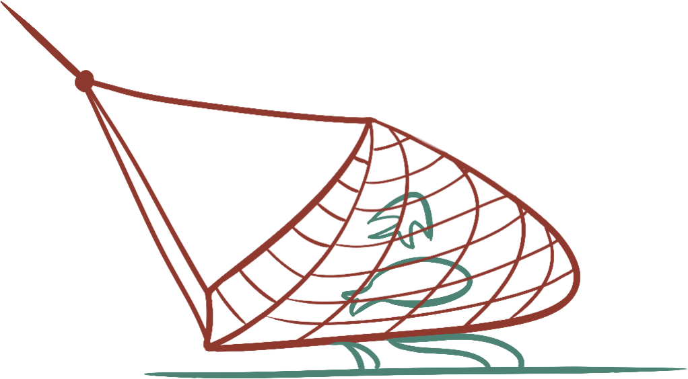
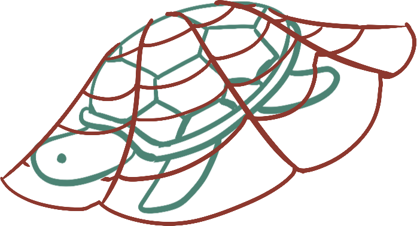
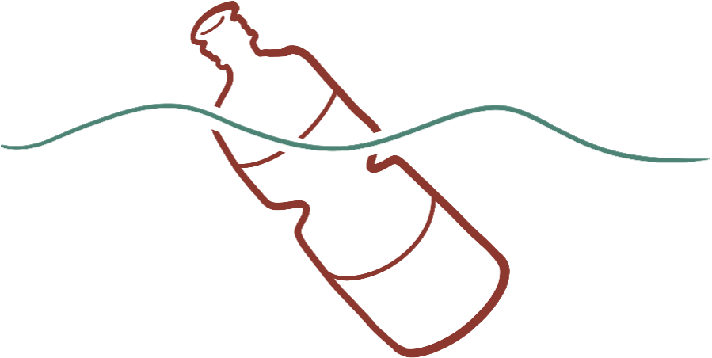
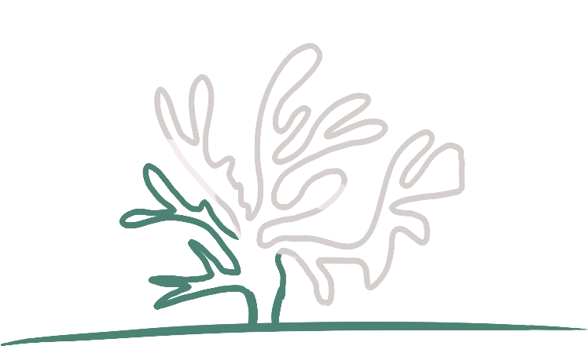
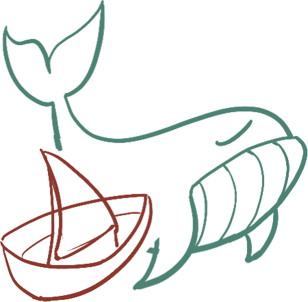
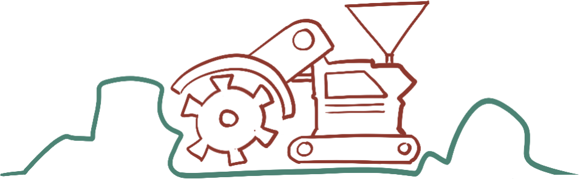

"You have called us a myth for as long as you have had a word for myth. We let you. We were not ready to be found. We are ready now - not to be believed, but to be heard."
We were not found. We chose this moment, after twelve thousand years of choosing silence instead. Nothing above the surface forced our hand. What changed is that we stopped believing silence was doing either of us any good.
We do not come to introduce ourselves as something new. We have been here the entire time you have been changing the water we both depend on.
Six patterns, repeated across every ocean we have observed. We are not presenting theory. We are presenting what we logged, as we logged it.

Nets dragged across seafloor habitats that took centuries to form, cleared in an afternoon for whatever happened to be swimming above them.

Whatever wasn't the target species was pulled up anyway, and thrown back already dead. We do not have a word above the surface for waste this casual.

Material that outlives every creature that mistakes it for food. It does not decompose. It accumulates, exactly where we live.

Warmed water until color left structures that took a thousand years to build. What remains is called a "reef" only out of habit.

A practice we watched end once, and watched return under a different flag. We keep both dates in the same entry.

Extraction machinery lowered into the one part of this planet you had not yet reached. You reached it anyway.
This is not an estimate. It is a record we have kept the entire time you assumed no one was keeping one.
Every pattern above was measured, published, and presented to you by your own scientists, in your own institutions, decades before we surfaced. You did not lack the information. You lacked the will to act on it.
A word you use to make loss sound like an exchange. We have seen no equivalent return. Only the water, emptier every year, and the same word used again the next time.
You built entire industries around debating whether the damage was real, while the damage continued regardless of the debate. We do not debate what we can count.
This is the charge that separates ignorance from choice. Ignorance ends the moment evidence is placed in front of you. What continues after that is a decision.
Twelve thousand years, and not once did you address the water as anything but a resource. We are addressing you now as something other than an audience.
The full record runs longer than one transmission allows.
What follows is not a discovery. It is a ledger we have kept the entire time - every name entered as it was lost, never removed, never rounded down.
The record is public now. The counting does not stop because you would rather not watch.